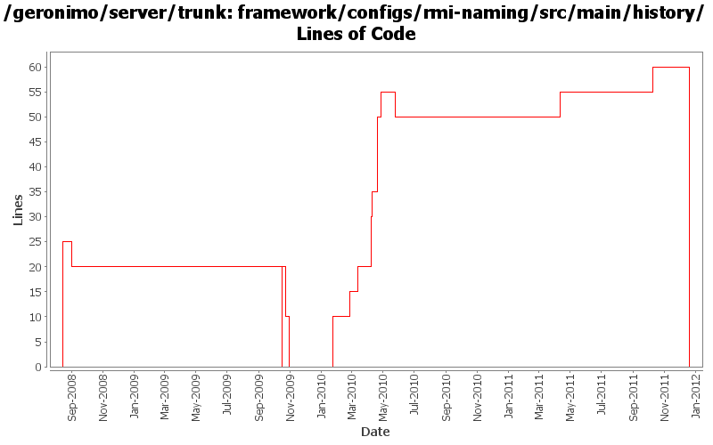

[root]/framework/configs/rmi-naming/src/main/history

| Author | Changes | Lines of Code | Lines per Change |
|---|---|---|---|
| Totals | 20 (100.0%) | 127 (100.0%) | 6.3 |
| djencks | 8 (40.0%) | 66 (52.0%) | 8.2 |
| gawor | 9 (45.0%) | 46 (36.2%) | 5.1 |
| rwonly | 1 (5.0%) | 9 (7.1%) | 9.0 |
| violalu | 1 (5.0%) | 5 (3.9%) | 5.0 |
| dwoods | 1 (5.0%) | 1 (0.8%) | 1.0 |
GERONIMO-6240 Make several base geronimo functions (kernel, deployer, etc) DS services and make the car-maven-plugin take advantage of that. Server assembly doesn't work yet, builds framework.
0 lines of code changed in 1 file:
GERONIMO-6240 try a feature for the base geronimo stuff, work on upgrading to osgi 4.3/karaf 3.0.0-SNAPSHOT
5 lines of code changed in 1 file:
update dependencies.xml files
9 lines of code changed in 1 file:
GERONIMO-5885 Upgrade karaf from 2.1.2 to 2.2.1-SNAPSHOT
5 lines of code changed in 1 file:
use latest components from aries project
1 lines of code changed in 1 file:
Wait for blueprint container to be created before processing rest of the gbeans. Should get ridd of sporadic 'We could not find an ObjectFactory to use' errors at server startup
5 lines of code changed in 1 file:
install & start aries jmx bundles in rmi-naming plugin
15 lines of code changed in 1 file:
more spec updates
5 lines of code changed in 1 file:
ejb spec needs jaxrpc and jaxrpc needs servlet
10 lines of code changed in 1 file:
synch with latest aries code
5 lines of code changed in 1 file:
make sure to install ejb and management spec at the same time (management spec uses some ejb classes)
5 lines of code changed in 1 file:
GERONIMO-5041 Integration aries osgi jndi implementation
10 lines of code changed in 1 file:
generate much saner dependency information and reduce number of packages exported via system bundle in car maven plugin
0 lines of code changed in 1 file:
bunch of logging improvements
0 lines of code changed in 1 file:
GERONIMO-4916 step 2 move sandbox osgi framework into trunk
20 lines of code changed in 1 file:
GERONIMO-4916 step 1 remove old framwork
0 lines of code changed in 1 file:
update other XML files with embedded versions from 2.2-SNAPSHOT to 3.0-SNAPSHOT
1 lines of code changed in 1 file:
GERONIMO-4692 sort dependencies.xml, except for connector-1_6
6 lines of code changed in 1 file:
GERONIMO-4239, sort of. Use transitive depenedencies in c-m-p everywhere. This may break stuff.... let me know
0 lines of code changed in 1 file:
GERONIMO-4248 Add dependency history files
25 lines of code changed in 1 file: